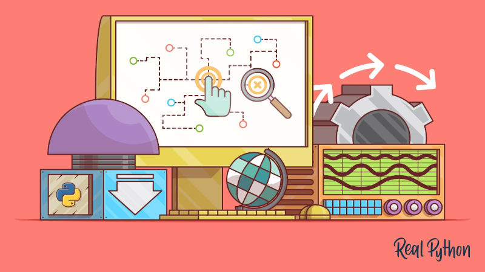
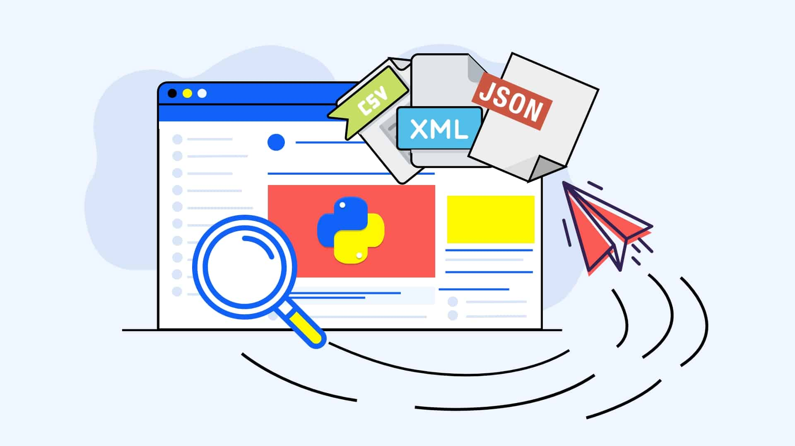

Python Scraping Frameworks
Web scraping is the easiest and fastest method to extract data from the internet. With so many web scraping tutorials and guides available out there on so many frameworks, programming languages, and libraries, it could be quite confusing to pick one for your web scraping needs. In this article, we will take a look at some of the top python web scraping frameworks and libraries.
Popular Python Web Scraping Library and Framework
1. Scrapy – The complete framework
2. Urllib
3. Python Requests
4. Selenium
5. Beautifulsoup
6. LXML
Scrapy – The complete web scraping framework
Scrapy is an open source web scraping framework written in Python which takes care of everything from downloading HTML if web pages to storing them in the form you want. For those of you who are familiar with Django, Scrapy is a lot similar to it. The requests we make on Scrapy are scheduled and processed asynchronously. This is because it is built on top of Twisted, an asynchronous framework.
What is asynchronous?s
For those of you, who aren’t familiar, let’s take a case. Assume you have to make 100 phone calls. Now, what would you do? Sit down next to the phone and dial up the first number. Wait for the response, process the call and then move to next. This is how it is with conventional web scraping methods. With Scrapy you can dial up 40 numbers and process each call as and when it receives a response. No time is wasted waiting. This becomes extremely important when your scraping needs are large.
Pros
• The CPU usage is a lot lesser
• Consumes lesser memory
• Extremely efficient in comparison
• The well-designed architecture offers you both robustness and flexibility.
• You can easily develop custom middle-ware or pipeline to add custom functionalities
Cons
• Overkill for simple jobs
• Might be difficult to install.
• The learning curve is quite steep.
• Not very beginner-friendly, since it is a full-fledged framework
Best Use Case
Scrapy is best if you need to build a real spider or web-crawler for large web scraping needs, instead of just scraping a few pages here and there. It can offer extensibility and flexibility to your project.
Urllib
As the official docs say, urllib is a python web scraping library with several modules for working with URLs (Uniform
Resource Locators). It also offers a slightly more complex interface for handling common situations – like basic
authentication, encoding, cookies, proxies, and so on. These are provided by objects called handlers and openers.
• urllib.request for opening and reading URLs
• urllib.error containing the exceptions raised by urllib.request
• urllib.parse for parsing URLs
• urllib.robotparser for parsing robots.txt files
Pros
• Included in python standard library
• It defines functions and classes to help with URL actions (basic and digest authentication, redirections, cookies,
etc)
Cons
• Unlike Requests, while using urllib you will need to use the method urllib.encode() to encode the parameters
before
passing them
• Complicated when compared to Python Requests
Best Use Case
• If you need advanced control over the requests you make
Requests – HTTP for humans
Requests is a python library. It is the perfect example how beautiful an API can be with the right level of abstraction. The Requests library allows you to send organic, grass-fed requests, without the need for manual labor.
Pros
• Easier and shorter codes than Urllib.
• Thread-safe.
• Multipart File Uploads & Connection Timeouts
• Elegant Key/Value Cookies & Sessions with Cookie Persistence
• Automatic Decompression
• Automatic Decompression
• Basic/Digest Authentication
• Browser-style SSL Verification
• Keep-Alive & Connection Pooling
• Good Documentation
• No need to manually add query strings to your URLs
• Supports the entire restful API, i.e., all its methods – PUT, GET, DELETE, POST.
Cons
• If your web page has javascript hiding or loading content, then requests might not be the way to go.
Best Use Case
• If you are a beginner, and your scraping task is simple and contains no javascript elements
Selenium – The Automator
Selenium is a library that automates browsers based on Java. But you can access it via the Python Package Selenium. Though primarily used as a tool for writing automated tests for web applications, it has come to some heavy use for pages that have javascript on them.
Pros
• Beginner-friendly
• You get the real browser to see what’s going on ( unless you are on a headless mode )
• Mimics human behavior while browsing, including clicks, selection, filling text box and scrolling
• Renders a full webpage and shows HTML rendered via XHR or Javascript
Cons
• Very slow
• Heavy memory use
• High CPU usage
Best Use Case
• When you need to scrape sites with data tucked away by JavaScript.
The Parsers

1. Beautiful Soup
2. LXML
Now that we have got our required HTML content, the job is to go through them and get the data. As well explained here, regular expressions can be used to extract data from an HTML document. It is almost never the best way to create maintainable code. With a regex, you are simply parsing text with no structure and thus you are more likely to come across errors. Why bother so when HTML in itself is presenting text in a given structure. Instead of a text match and regex, we could just parse. If writing maintainable code, it’s best to use parsers.
What are Parsers?
A parser is simply a program that can extract data from HTML and XML documents. They parse the structure into memory and felicitates the use of selectors (either CSS or XPath) to easily extract the data. The advantage here is that parsers can automatically correct “bad” HTML (unclosed tags, badly quoted attributes, invalid HTML etc) and allow us to get the data we need. The disadvantage is that it requires more processor work in most cases, but as ever it’s a trade-off and tends to be
BS4
Beautiful Soup (BS4) is a python library that can parse data. As we already know, the content we are parsing might belong to various encodings. BS4 automatically detects it. BS4 creates a parse tree which helps you navigate a parsed document easily and find what you need.
Pros
• Easier to write a BS4 snippet than LXML.
• Small learning curve, easy to learn.
• Quite robust.
• Handles malformed markup well.
• Excellent support for encoding detection
Cons
• If the default parser chosen for you is incorrect, they may incorrectly parse results without warnings, which can
lead
to disastrous results.
• Projects built using BS4 might not be flexible in terms of extensibility.
• You need to import multiprocessing to make it run quicker
Best Use Case
• When you are a beginner to web scraping.
• If you need to handle messy documents, choose Beautiful Soup.
LXML
Lxml is a high-performance, production-quality HTML and XML parsing library.
Pros
• It is the best performing parser. As shown here
• Most feature-rich python library for the same.
Cons
• The official documentation isn’t that friendly, so beginners are better off starting somewhere else.
Best Use Case
If you need speed, go for lxml.
Our Recommendations
If your web scraping needs are simple, then any of the above tools might be easy to pick up and implement. For smaller
data requirements there are free web scraping tools you could try out that do not need much coding skills and are
cost-effective.
But when you have a large amount of data that needs to be scraped consistently, especially over pages that might even
change it’s structure and links, doing it on your own might be too much of an effort.